By: CS2103T-T12-4 Since: Aug 2019 Licence: -
- 1. Introduction
- 2. Quick start
- 3. Features
- 3.1. Add new FlashCard:
add q>QUESTION a>ANSWER [c>CATEGORY]… - 3.2. Edit an existing FlashCard:
edit INDEX {fields wanted to edit}… - 3.3. Delete FlashCard:
delete INDEX - 3.4. Clear all the FlashCard:
clear - 3.5. Search for FlashCards:
search - 3.6. List all FlashCards:
listall - 3.7. List of category :
list CATEGORY - 3.8. Add general Deadlines:
deadline t>TASK d>DUEDATE - 3.9. Remove deadline from list:
remove index - 3.10. Show monthly calendar with all deadlines:
calendar - 3.11. Set Flashcard as "Bad", with deadline to re-test:
bad index - 3.12. List all "Bad" FlashCards for a specific date
listbad d>DATE - 3.13. Remove a specific "Bad" FlashCard for a specific date
removebad d>DATE i>INDEX - 3.14. Test mode:
start - 3.15. Export FlashCards to a file:
export c>CATEGORY p>FILE_PATH - 3.16. Import FlashCards from a JSON file:
import p>FILE_PATH - 3.17. Get the full list of commands:
help - 3.18. View overall statistics:
stats - 3.19. Change color themes:
theme THEMENAME - 3.20. Saving the data
- 3.21. Exit:
exit
- 3.1. Add new FlashCard:
- 4. FAQ
- 5. Command summary
1. Introduction
KeyboardFlashCards (KFC) is for those who prefer to use a desktop app to study using flashcards. More importantly, it is optimized for those who prefer to work with a Command Line Interface (CLI) while still having the benefits of a Graphical User Interface (GUI). If you can type fast, KFC can help you manage your flashcards much more efficiently than traditional GUI apps.
Interested? You should be! KFC is perfect for NUS Computing students. We even have additional features not available with most flashcard managers that we’re sure you’ll love. Enjoy!
Please also note the following icons, which will indicate points of interest throughout this document.
| A point of information that you may wish to note |
| A tip or suggestion |
| A cautionary word of advice |
2. Quick start
-
Ensure you have Java 11 or above installed in your Computer.
-
Download the latest build KeyboardFlashCards.jar here.
-
Copy the file to the folder you want to use as the home folder for your KFC app.
-
Double-click the file to start the app. The GUI should appear in a few seconds.
 Figure 1. Graphical User Interface of KeyboardFlashCards[
Figure 1. Graphical User Interface of KeyboardFlashCards[
3. Features
This section contains the features and their respective commands.
Command Format
-
Words in
UPPER_CASEare the parameters to be supplied by the user e.g. inadd >QUESTION,QUESTIONis a parameter. The command format would thus be as such:add q>1+1. -
Items in square brackets are optional e.g
q>QUESTION [c>CATEGORY]can be used asq>1+1 c>mathor asq>1+1. -
Items with
… after them can be inserted zero or more times e.g.[c>CATEGORY]…can be used asc>math,c>math c>schooletc. -
Parameters can be in any order e.g. if the command specifies
q>QUESTION a>ANSWER,a>ANSWER q>QUESTIONis also acceptable. -
Currently, our application does not support emoji.
3.1. Add new FlashCard: add q>QUESTION a>ANSWER [c>CATEGORY]…
This command allows to you to add a new FlashCard with question and answer.
add q>What is CS2103T a>Software engineering
You may also include the category for the FlashCard.
add q>What is CS2103T a>Software engineering c>CS2103T
a>, q> and c> are reserved as prefixes, If you want to include these in your question/answer put them in "" or otherwise to differentiate.
|
To add:
-
Type
add q>What is the use of checksum ? a>To detect "error"and press Enter.
-
The result box will display the message: "New FlashCard added: What is the use of checksum ? Answer: To detect "error""
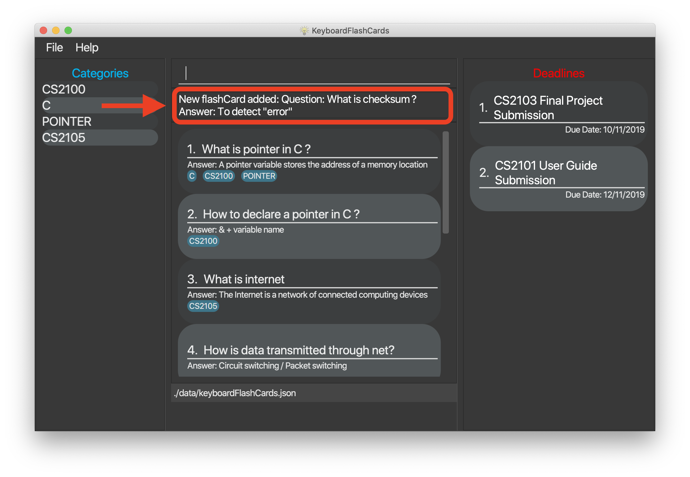 -
And you can check the new FlashCard has been added to bottom of the FlashCard list.

When multiple questions or answers prefixes in one add command, only input from the last appearance will be taken. For example, add q> 1+1 a> 2 q>Hi a>bye KFC will add a FlashCard with the question as Hi and the answer as bye.
|
3.2. Edit an existing FlashCard: edit INDEX {fields wanted to edit}…
This command allows you to edit the FlashCard with index corresponding to the
display list with 1 or multiple fields e.g: edit 7 c>CS2105
To edit:
-
Type
edit 7 c>CS2105and press Enter.
-
The result box will display the message: "Edited FlashCard: What is the use of checksum ? Answer: To detect "error" Categories: [CS2105]".

-
And you can see that the 7th FlashCard has been edited on the FlashCard list.

3.3. Delete FlashCard: delete INDEX
This command allows you the delete a
particular FlashCard with the index
show on the FlashCard list. e.g.
delete 7
To delete:
-
Type
delete 7and press Enter.
-
The result box will show the message: "Deleted FlashCard: What is the use of checksum ? Answer: To detect "error" Categories: [CS2105]"

-
And you can check the FlashCard list that the FlashCard has been deleted.

3.4. Clear all the FlashCard: clear
This command allows you to delete all the FlashCard in the storage.
To clear:
-
Type
clearand press Enter.
-
The result box will show the message: -"Flash card has been cleared!"_ And you will see that all lists turn empty.
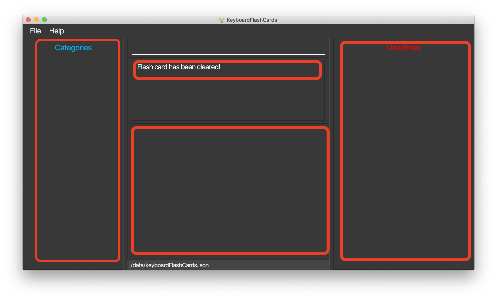
3.5. Search for FlashCards: search
The section will show you 3 methods to search for FlashCards. Keywords are case-insensitive.
| Current search function does not support fuzzy search, so remove punctuations when adding the FlashCards or include the punctuations for searching |
3.5.1. Either the question or the answer matches the keyword(s): "search KEYWORD(S)"
This command allows you to search for FlashCards with the question or answer matching the keyword(s). Multiple keywords are separated by a single space.
To search:
-
Type
search pointerand press Enter.
-
The result box will show message: "2 flash cards listed!" and the FlashCard list will show the matching FlashCards

3.5.2. Question matching the keyword(s) only: searchqn KEYWORD(S)
This command allows you to search for FlashCards with the question matching the keyword(s). Multiple keywords are separated by a single space.
to search question:
-
Type
searchqn Cand press Enter.
-
The result box will show message: "2 flash cards listed!" and the FlashCard list will show the matching FlashCards

3.5.3. Answer matching the keyword(s) only: searchans KEYWORD(S)
This command allows you to search for FlashCards with the answer matching the keyword(s). Multiple keywords are separated by a single space.
to search for answer:
-
Type
searchans nameand press Enter.
-
The result box will show message: "1 flash cards listed!" and the FlashCard list will show the matching FlashCards

3.6. List all FlashCards: listall
This command allows you to lists all the FlashCards in the storage.
To listall:
-
Type
listalland press Enter.
-
The result box will show message: "Listed all Flash Cards".
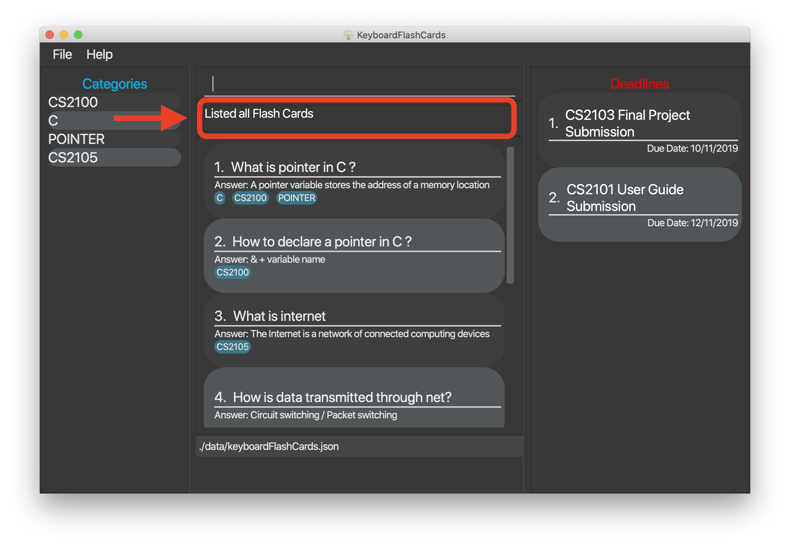 -
And the FlashCard list will show all the FlashCards. You can move your mouse to the FlashCard list and scroll up and down to view the FlashCards.
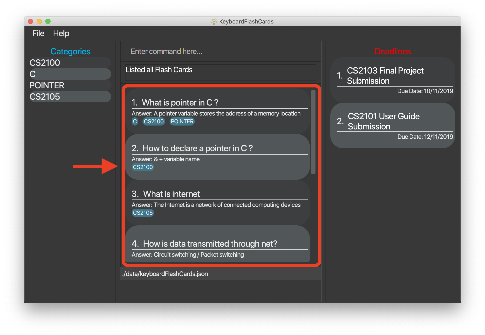
3.7. List of category : list CATEGORY
This command allows you to list all FlashCards under one or multiple categories. Multiple keywords are separated by a single space.
to list category:
-
Type
list CS2105and press Enter.
-
The result box will show message: "1 FlashCard is listed!" .
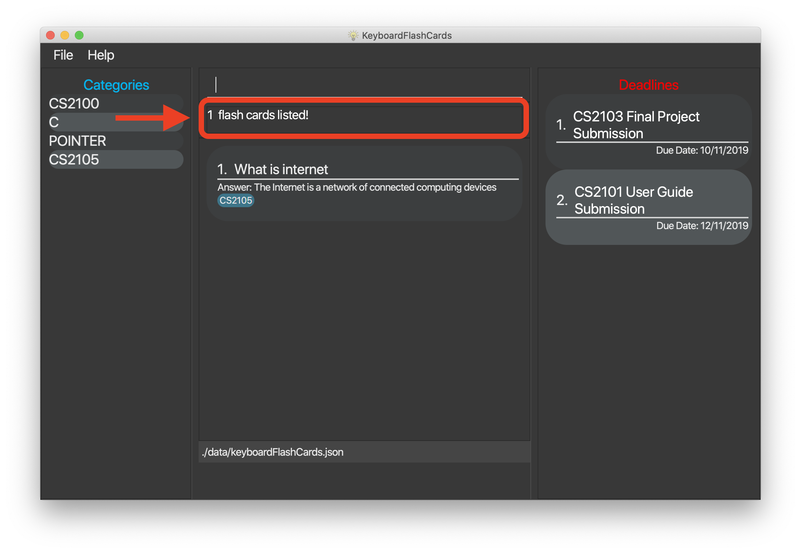 -
And the FlashCard list is updated.

3.8. Add general Deadlines: deadline t>TASK d>DUEDATE
This command adds a general Deadline into a list. The list will be displayed on the right-side pane.
Note: DUEDATE has to be in dd/MM/yyyy format.
You can refer to the example below.
deadline t>CS2103 Exam d>10/12/2019

After keying in the command, the result box will show the success message.
The new Deadline will now be shown at the right-side pane.

Note that Deadline(s) entered will be sorted in ascending order i.e. earliest Deadline on index 1
|
Deadline(s) can only be after the current date. Leap year dates are also taken into account.
|
3.9. Remove deadline from list: remove index
Removes a specific Deadline. The list on the right-side pane will no longer have the Deadline.
remove 2
When a Deadline of re-test questions is removed, the list of questions will still be stored in the specific date.
|
3.10. Show monthly calendar with all deadlines: calendar
Shows the calendar filled with all deadlines in the month. The calendar will be shown as a new window pop-up.
calendar
The calendar will pop up, seen below.
Calendar does not show the specific Deadline, but an overview of all your Deadline(s) for the month ahead.
|
3.11. Set Flashcard as "Bad", with deadline to re-test: bad index
Sets a specific flashcard as a "Bad" FlashCard. It will then be stored as a Deadline in the list on the right-side pane.
bad 2
Key the above mentioned example into the command box
The command will add the 2nd flashcard on the list, "How to declare a pointer in C?" as a 'bad' flashcard. After which, the result box will show the success message. A new deadline will now be shown at the right side-bar, 3 days later from the day it was entered.

| Bad Questions will be added to a deadline which is due 3 days later. This is an approximated value that based on the theory of Spaced Repetition, referring to Ebbinghaus Forgetting Curve by Hermann Ebbinghaus who hypothesised this theory in 1985. |
3.12. List all "Bad" FlashCards for a specific date listbad d>DATE
List all the "Bad" rated FlashCards from a specific date. The FlashCard Questions will be shown.
listbad d>14/11/2019
The automated test mode for the "Bad" FlashCard is not functional at this point and will be implemented in KFC v2.0.
|
3.13. Remove a specific "Bad" FlashCard for a specific date removebad d>DATE i>INDEX
You can remove a specific "Bad" rated FlashCard from the list
removebad d>14/11/2019 i>2
You can refer to the example above.
As seen from before, after listing all the "Bad" rated FlashCards for a specific date using listbad d>14/11/2019, you can observe the full list as seen below.
Afterwards, you can choose to remove as specific "Bad" rated FlashCard from that list.
Using the example removebad d>14/11/2019 i>2, you can observe this.

Once removed, a success message will be shown!
Using the remove command to remove a "ToDo: Bad Questions" Deadline does not remove all the "Bad" FlashCard stored for that date.
|
3.14. Test mode: start
3.14.1. Start command: start [CATEGORY]
This command starts the FlashCard test mode. If no parameter is supplied, the application will test all
available FlashCards.

If tag(s) are entered, this command starts the FlashCard test from any specific category. Only relevant FlashCards from the tag(s) will
be tested.
After starting the test, you should see the first question.

3.14.2. See FlashCard answer: ans
This command allows you to check the answer of the FlashCard question.
After entering the ans command, you will see the answer to that FlashCard.

3.14.3. Rate FlashCard: rate RATING
After seeing the answer, you can enter this command which rates the FlashCard,
depending on how well you answered the question i.e. easy, good, hard.

At the same time, the next question will be displayed if available.
3.14.4. Skip question: skip
If you would like to manually filter and skip questions, the skip command helps you to skip FlashCards,
saving you extra time.

Similarly to the rate command, skip command fetches the next question if available.
3.14.5. End test: end
You can stop the test any time simply by typing end.

By exiting the test mode, normal commands such as listall and add are re-enabled.
The list of FlashCards in the system will be displayed again.
3.15. Export FlashCards to a file: export c>CATEGORY p>FILE_PATH
You can use this command to export all your FlashCards in a particular category, to an external file.
This may be useful if you wish to publish your FlashCards somewhere, print them out, or share them with a friend.
The file will be located at the file path that you specify, and the format of the file will be inferred from the
extension. We currently support exporting to JSON ('.json') and document ('.docx') file formats.
Example: export c>CS2105 p>C:\Documents\cs2105.json
Suppose you have a category named CS2105, and you wanted to export the FlashCards in that category to an external file
(so you can share them with your friend). Here’s how you would go about this:
-
Type the example command given above into the command box (
export c>CS2105 p>C:\Documents\cs2105.json), as shown below.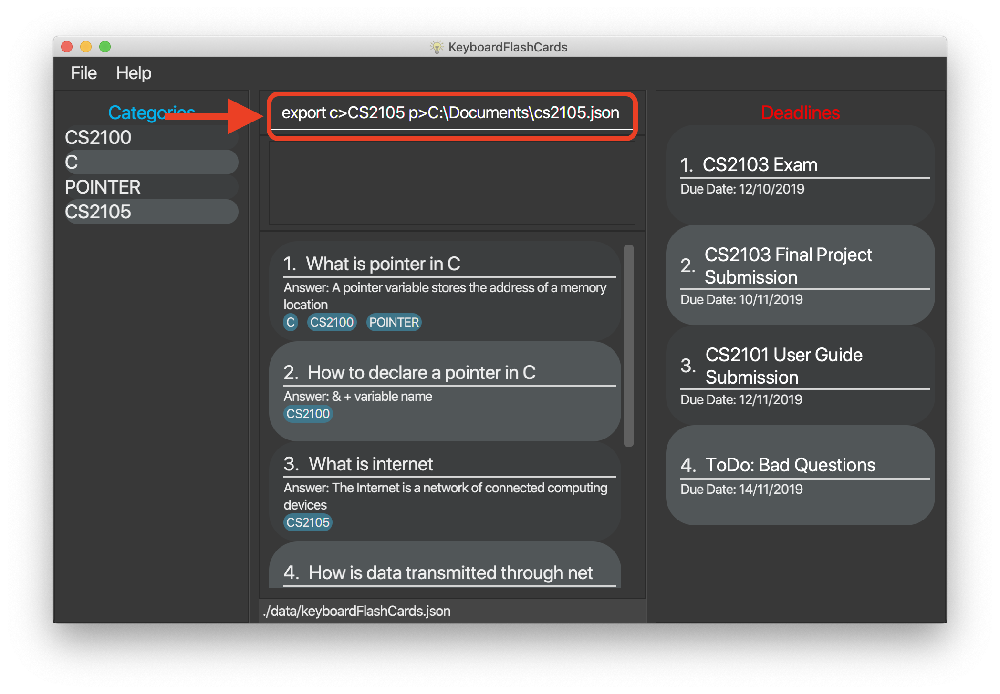 -
Press Enter to execute the command. The results box will display a success message similar to the one shown in the screenshot below.
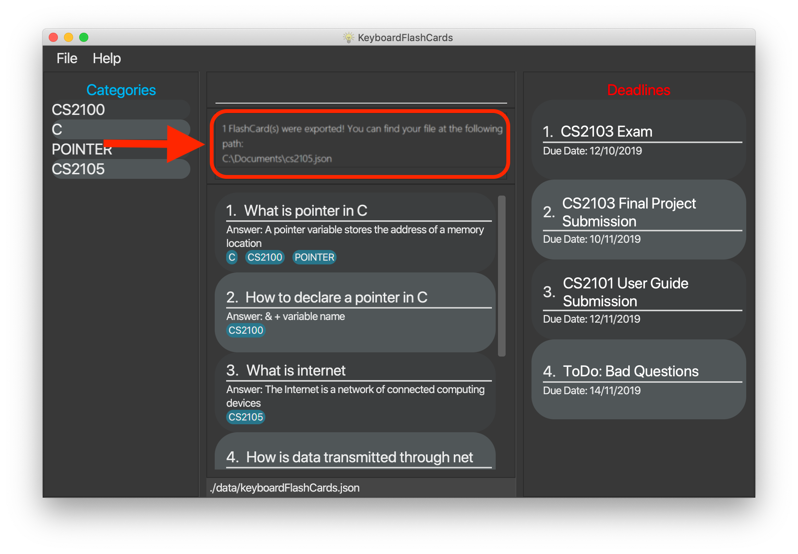 -
Using your file explorer, navigate to the directory that you specified in the command (in this case, it would be
C:\Documents). Sure enough, your exported file is there!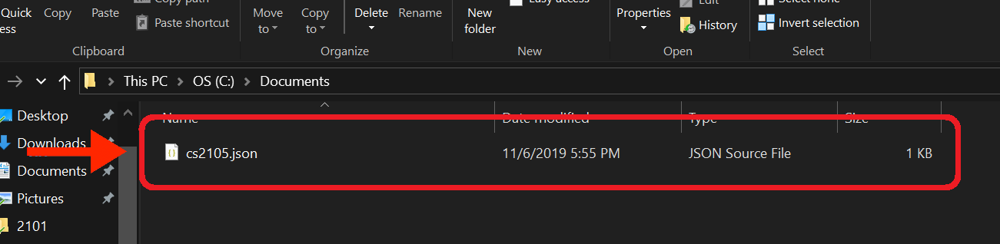
Please refer to the table below for a summary of the file formats that we support exporting to:
Format |
Document ('.docx') |
JSON ('.json') |
Intended purpose |
For use as a cheat sheet |
For sharing |
What is copied from each FlashCard |
Question and answer only |
Question, answer, and the category which you specified in the export command |
If you’re on a Unix-based operating system (e.g. Mac OS, Linux), any absolute paths that you specify will have to begin from the root directory /, not the user directory ~. For example, if you were on a Mac and your username was "jason", and you wanted to export to a document file on your desktop, the file path would be /Users/jason/Desktop/document.docx.
|
Your file paths must be comprised solely of alphanumeric characters, spaces, and the following characters: ~\/-_!:[]()It must also end in one of the supported file extensions - either .json or .docx.Do note that some directories may be protected by your operating system ( C:\ on Windows, / on Unix). You may not be allowed to save files to these directories.Please take care not to modify exported JSON files - your friends might have trouble importing them otherwise. |
3.16. Import FlashCards from a JSON file: import p>FILE_PATH
You can use this command to import FlashCards from a file that you or someone else had exported to earlier.
We currently only support importing from JSON ('.json') files.
Example: import p>C:\Downloads\cs2105.json
Suppose that your friend has kindly exported some of his FlashCards for you to use. You have download the JSON file that he sent you,
and it’s currently located at the following path: C:\Downloads\cs2105.json.
Your next step is to get those FlashCards into your copy of KFC. Here’s how you’d go about this:
-
Type the example command given above into the command box (
import p>C:\Downloads\cs2105.json), as shown below.
-
Press Enter to execute the command. The results box will display a success message similar to the one shown in the screenshot below. Furthermore, the category list on the left will now display the category of the newly-imported FlashCards!

| Duplicate FlashCards will not be imported. KFC will notify you if it detects duplicate FlashCards in the provided file. |
3.17. Get the full list of commands: help
This command allows you to view all the commands available in the application.
help
-
Type
helpand press Enter to execute it.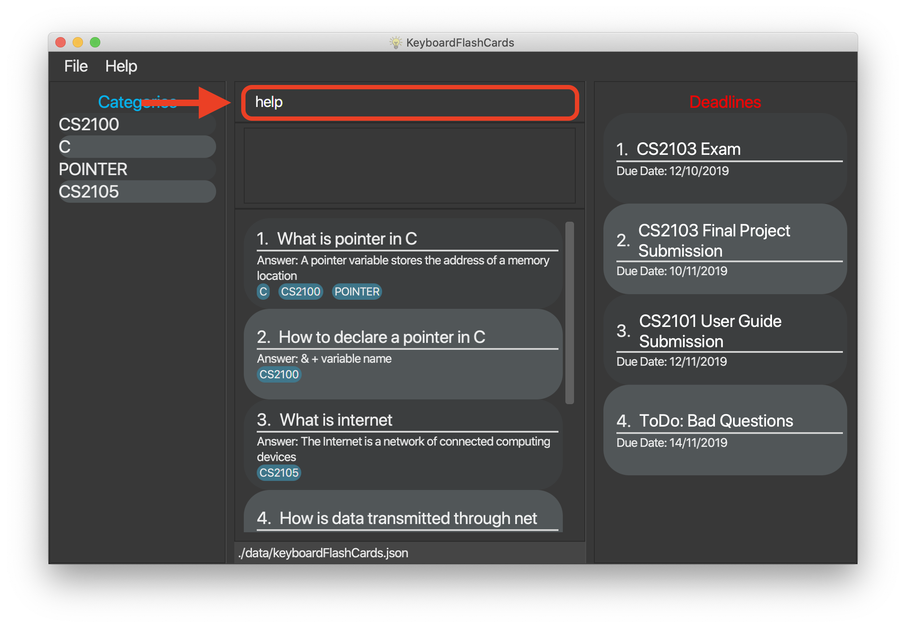 -
The result box will display the message:
Opened help window.
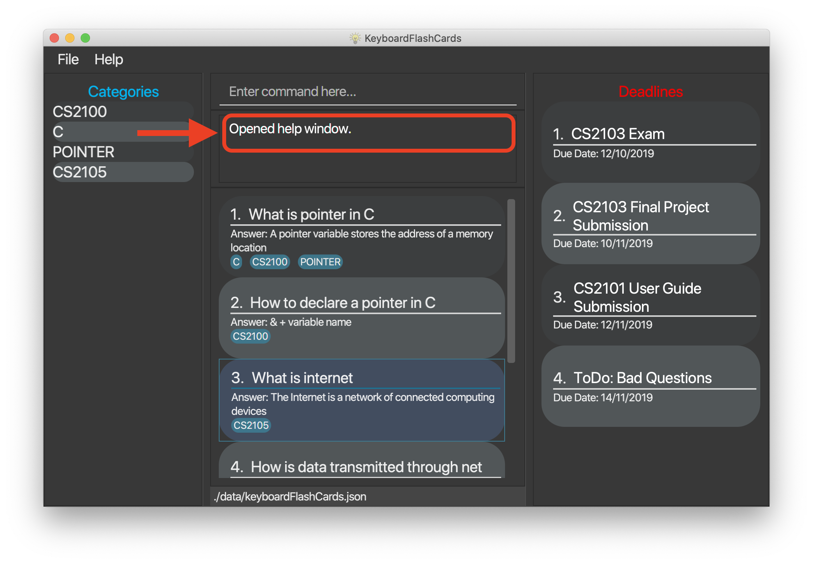 -
A help window with all the commands will also be displayed:
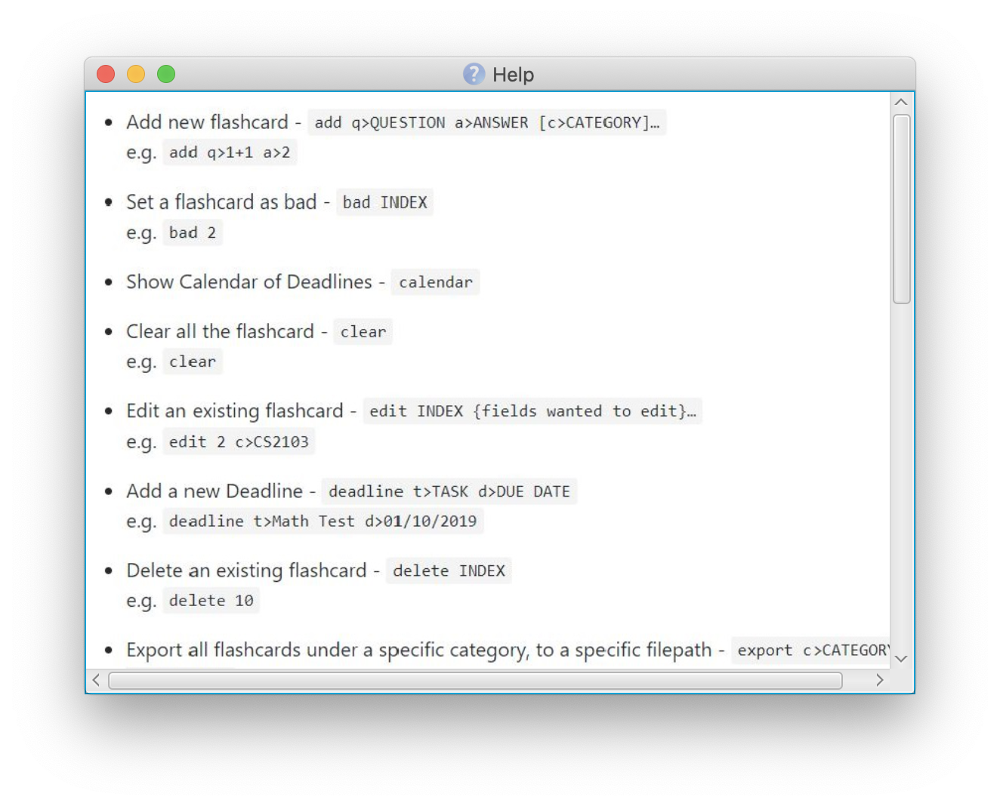
3.18. View overall statistics: stats
This command allows you to view three different type of statistics.
stats
To view statistics:
-
Type
statsand press Enter. -
The result box will display the message:
Statistics displayed
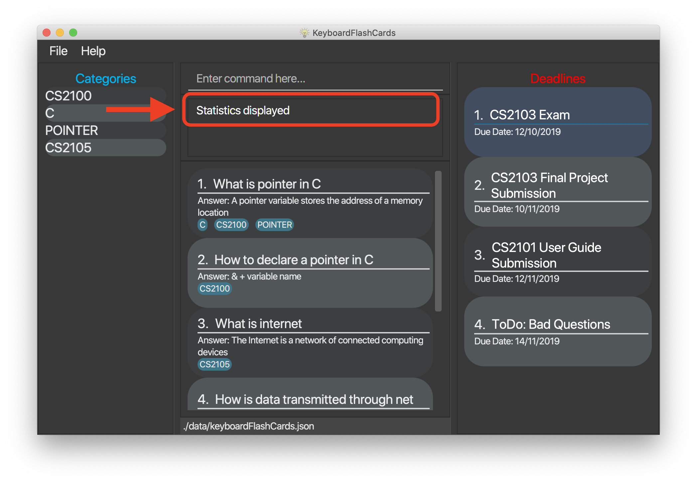 -
A window will appear, displaying 3 charts:

Starting from the top, the first chart displays the total number of FlashCards rated as good, hard and easy. The second chart displays the total number of FlashCards rated as good, hard and easy that are completed during test mode. The last chart displays your performance (in percentage) for all tests completed. Performance is determined by the ratio of FlashCards rated as good and easy to FlashCards rated as hard.
Note that the second and third chart will be empty if the
statscommand is executed before running at least one test, since both of these charts are dependent on the test mode. Furthermore, the statistics displayed on these two charts will reset when the application is closed.
3.19. Change color themes: theme THEMENAME
This command allows you to change the theme of the app.
Follow are the current available themes
dark |
light |
pink |
blue |
hacker |
nus |
To change theme:
-
Type "theme hacker" and press Enter
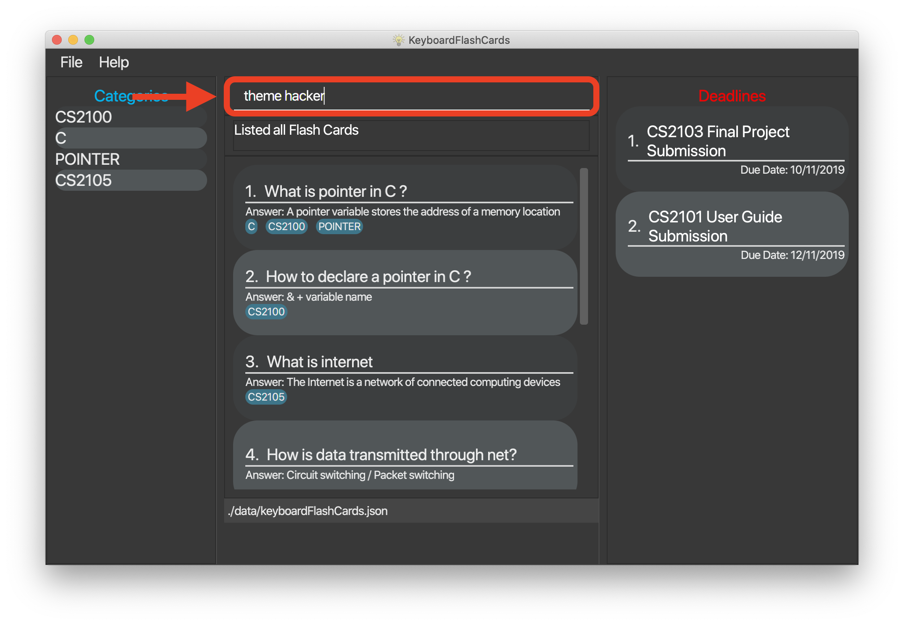 -
The result box will show the message: "Theme changed to hackerTheme" and the theme will be changed.

3.20. Saving the data
Flashcard data are saved in the hard disk automatically after any command that changes the data.
There is no need to save manually.
3.21. Exit: exit
This command allows you to exit the application.
To exit:
-
Type
exitand press Enter. -
The application window will close by itself.
4. FAQ
Q: How will the program know the correct answer to the questions?
A: You have to key in the answer manually when you create the question - it’s similar to a real set of FlashCards.
Q: How does the reminder system work?
A: You select a category and a date, and the program will remind you to revise that category when the date comes.
Q: How will the program know if my answer is good or bad?
A: It doesn’t know - you have to decide for yourself whether you are satisfied with your answer.
Q: Will I be able to resume the test from where I left off after I have stopped?
A: No. The program does not support that.
Q: Can I change the category of a FlashCard?
A: Yes, it will be one of the fields you can change when you edit the FlashCard. Do note that after you change the category, you will have to refer to it using its new category and ID.
Q: Can I use my mouse to interact with the user interface?
A: Yes, but only to a very small extent, like closing the window. This application is targeted primarily at keyboard users.
Q: What if I forget the format of a command’s arguments?
A: Don’t worry! Just try your best. If the format you’ve provided is wrong, you will be prompted with the correct format.
5. Command summary
-
Add new
FlashCard-add q>QUESTION a>ANSWER [c>CATEGORY]…
e.g.add q>1+1 a>2 -
Show answer during test mode -
ans -
Set a
FlashCardas bad -bad INDEX
e.g.bad 2 -
Show Calendar of all
Deadline(s) -calendar -
Clear all the
FlashCard-clear -
Add a new Deadline -
deadline t>TASK d>DUE DATE
e.g.deadline t>Math Test d>01/10/2020 -
Delete an existing
FlashCard-delete INDEX
e.g.delete 10 -
Edit an existing
FlashCard-edit INDEX {fields to edit}…
e.g.edit 2 c>CS2103 -
End
FlashCardtest -end -
Export all flashcards under a specific category, to a specific filepath -
export c>CATEGORY p>FILE_PATH
e.g.export c>CS2105 p>C:\Users\User\Documents\cheat_sheet.docx -
Get full list of commands -
help -
Import
FlashCard(s) from a JSON file -import p>FILE_PATH
e.g.import p>C:\Users\User\Documents\flashcards.json -
List all flashcards under a specific category -
list CATEGORY
e.g.list Math -
List all
FlashCard(s) -listall -
List all "Bad"
FlashCard(s) -listbad -
Rate
FlashCardduring test mode -rate RATINGe.g.rate easy -
Remove
Deadlinefrom list -remove INDEX
e.g.remove 2 -
Remove a "Bad" rated
FlashCardfrom list -removebad INDEX
e.g.removebad 2 -
Search for
FlashCard(s) -search-
search KEYWORD(S)e.gsearch c -
searchans KEYWORD(S)e.gsearchans name -
searchqn KEYWORD(S)e.gsearchqn pointer
-
-
Skip
FlashCardduring test mode -skip -
Start a certain topic of
FlashCard(s) -start CATEGORY
e.g.start Mathematics -
View overall statistics -
stats -
Change theme -
theme THEMENAME
e.g.theme dark